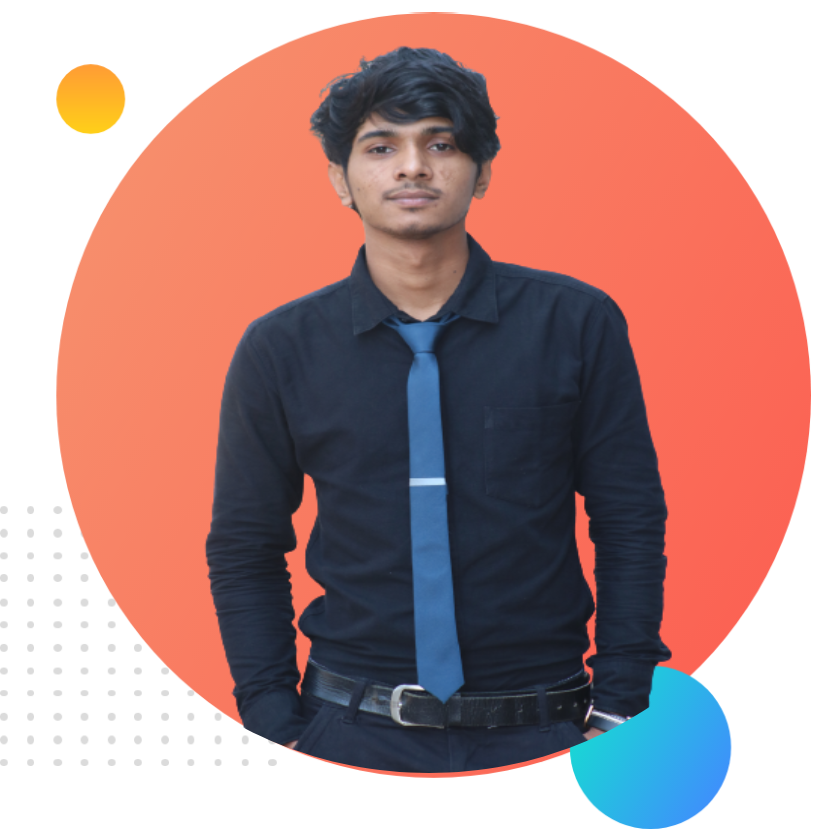

I am tuhin hossain lived in barishal. i completed my secondary school certificate in rashed khan menon model school and college .after that i completed my higher secondary school certificate in babugonj degree college.after that i admitted different computer course in my area.and then i completed my bsc degree in computer science and engineering from city university.when i am in city university i start wev devlopping .i worked in source 9 it company.they provide me an internship for the post of front end develpper at wordpress frame work.later i learn the basic of python and django frame work.i completed my graduated project with django the project in onlive auction system.after completing my undergraduation i am trying to learnt java script.
